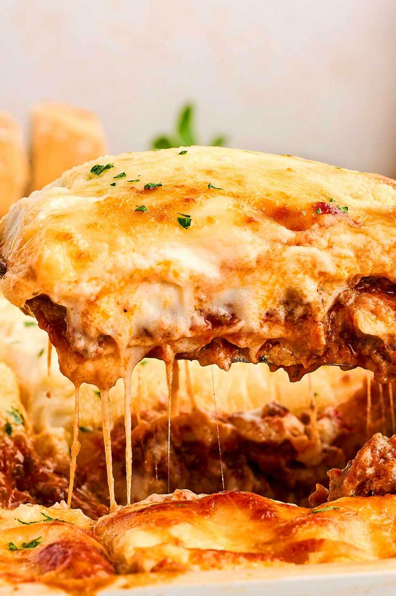

Traditional Lasagne is the ultimate Italian comfort food. It features layers of tender pasta, savory bolognese meat sauce, and creamy béchamel. Topped with melted mozzarella and parmesan, it is baked until golden and bubbly. This hearty, multi-layered masterpiece balances rich flavors and textures, making it a timeless family favorite.